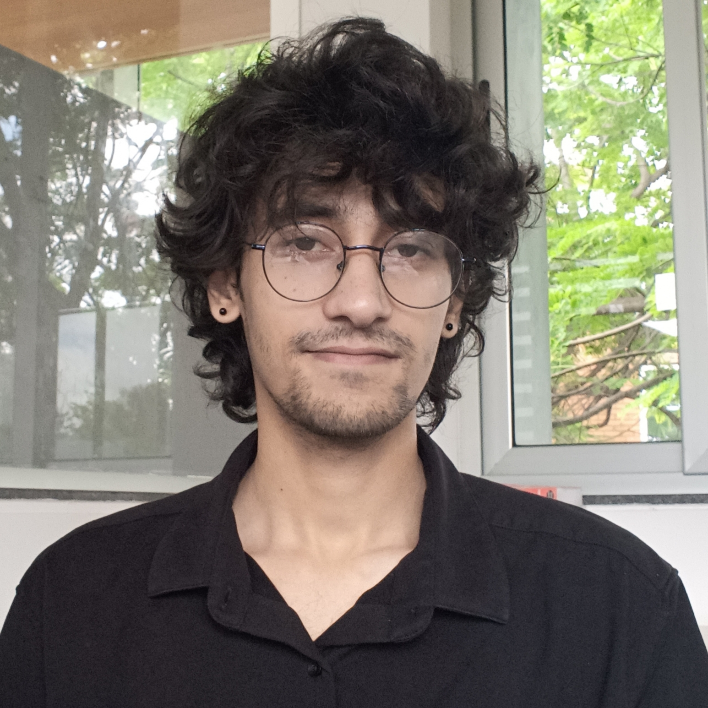

Graduate Student in Theoretical Physics
Email: ratul.thakur@icts.res.in

I am a graduate student at the International Centre of Theoretical Sciences of the Tata Institute of Fundamental Research working primarily on many body quantum dynamics. More details about my research can be found here. Complete list of articles authored by me can be found on my Google scholar profile
Imprints of information scrambling on eigenstates of a quantum chaotic system
Bikram Pain, Ratul Thakur, and Sthitadhi Roy
[arXiv:2507.02853]
Logarithmic entanglement lightcone from eigenstate correlations in the many-body localised phase
Ratul Thakur, Bikram Pain, and Sthitadhi Roy
[Phys. Rev. B 111, 174206 (2025)] [arXiv:2504.02815]
Email: ratul.thakur@icts.res.in